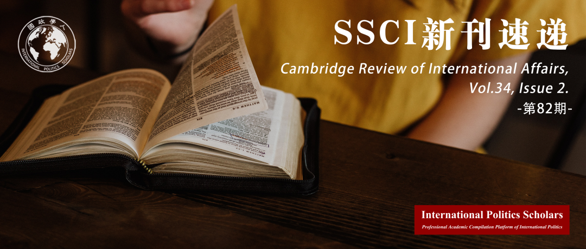

收录于合集 #新刊速递 123个

期刊简介
《剑桥国际事务评论》（ Cambridge Review of International Affairs, CRIA ）于1985年创立，是国际关系同行评审学术期刊，以季刊形式发行。由剑桥大学国际研究中心（现隶属牛津大学政治与国际关系学院）编辑，Routledge出版。其内容包括国际关系，历史，法律，政治经济学，领域研究，发展研究和性别研究。据2019年Journal Citation Reports显示，该期刊影响因子为1.366。在95类国际关系领域的期刊中位居45，并在181类政治科学类期刊中排行94。
本期编委
【编译】 崔宇涵、王川、谢菁、赵雷、扎西旺姆
【校对】 陈勇
【审核】 张彦赪
【排版】 韩柯
【美编】 方引弓

本期目录
1. 地缘文化与不平衡：不平衡与综合发展历史中的西方主义
Geoculture and unevenness: Occidentalism in the history of uneven and combined development
2.不平衡与综合发展:共产主义中的融合性现实主义?
Uneven and combined development: convergence realism in communist regalia?
3.经济刺激与政治必要：不平衡与综合发展的国际政治经济贡献
Of economic whips and political necessities: a contribution to the international political economy of uneven and combined development
4.强加均衡，防止综合：描绘美国外交政策创新的社会技术想象的国际动力
Imposing evenness, preventing combination: charting the international dynamics of socio-technical imaginaries of innovation in American foreign policy
5.可预见的不可预测: 特朗普的个性和对华态度
Predictably unpredictable: Trump’s personality and approach towards China
01
地缘文化与不平衡：不平衡与综合发展历史中的西方主义
【题目】 Geoculture and unevenness: Occidentalism in the history of uneven and combined development
【作者】 Joseph Leigh，2020年获伦敦政治经济学院博士学位，主要研究方向为国际关系和历史社会学的交叉领域，重点关注十九至二十世纪的帝国全球史、国际秩序和权力政治。
【摘要】 有关“不平衡与综合发展”的文献主要集中于其对政治经济与地缘政治研究的贡献，但它们尚未系统地涉及社会变革的文化维度——人们通过社会共有观念理解世界并对世界采取行动。本文将“不平衡与综合发展”的前提应用于19世纪西方主义：即“西方”处于文化、文明与现代性的主导地位的观念，以此来弥补这一缺陷。针对方法论的内在主义与欧洲中心主义问题，本文认为“不平衡与综合发展”为考察19世纪末帝国时代“西方”身份与话语的国际建构提供了关键的切入点。具体而言，本文提出了一种地缘文化反馈理论，该理论在全球不平衡的特定时刻中考察这些身份与话语的形成条件，即在晚期工业化社会中“相对落后”的经历如何转变为自觉的“西方化”的赶超发展，从而动摇了欧洲白人至上的主流观念。在大英帝国与美国，作为对这种历史动态的反应，出现了一种独特的文化转型模式，即一种以捍卫“西方”为中心的文明封闭的话语。
Recent works on ‘uneven and combined development’ (UCD) have focused on its contributions to the study of political economy and geopolitics, but they have yet to systematically address the cultural dimension of social change — the socially shared ideas by which people understand and act upon the world. The present article addresses this lacuna by applying the premises of UCD to the nineteenth-century emergence of Occidentalism: the idea of ‘the West’ as the dominant site of culture, civilisation and modernity. Against the problems of methodological internalism and Eurocentrism, I argue that the categories of unevenness and combined development provide critical entry points for an examination of the international construction of ‘Western’ identities and discourses during the late-nineteenth century imperial era. Specifically, I advance a theory of geocultural feedback which locates the constituting terms of those identities and discourses in a specific conjuncture of global unevenness: how the experience of ‘relative backwardness’ in late- industrialising societies translated into self-consciously ‘Westernising’ projects of catch-up development which destabilised prevailing conceptions of white European supremacy. In both the British and American empires, this historical dynamic produced a distinct pattern of cultural transformation: a reactive discourse of civilisational closure centred on the defence of ‘the West.’
【编译】 王川
【校对】 陈勇
02
不平衡与综合发展:共产主义中的融合性现实主义?
【题目】 Uneven and combined development: convergence realism in communist regalia?
【作者】 David Blagden，英国埃克塞特大学国际安全高级讲师，主要研究方向包括新兴大国崛起的原因和影响，英国及其盟友的安全和对外政策等。
【摘要】 列夫·托洛茨基(Leon Trotsky)的“不平衡和综合发展”(UCD)概念作为国际关系的解释理论在过去十年中获得了越来越多的关注，尤其是在贾斯汀·罗森伯格(Justin Rosenberg)和亚历山大·阿尼瓦斯(Alexander Anievas)的工作中。特别是，各国经济发展的不平衡顺序会影响其相对实力关系和国内政治稳定的观点，从直觉上看似乎具有合理性。此外，这种相对的权力转移和国内动荡对国际稳定的潜在影响表明，这种研究可能会很大程度上有利于提供解释。然而，与此同时，有关UCD的直觉提出了其他关于因果基础和理论关联的问题。例如，是什么导致了不平衡发展的顺序?相对的权力转移和国内政治不稳定究竟是如何提升战争风险的?本文将论证的是：就其微观基础来看，UCD可以被理解为追赶型经济增长收敛理论（catch- up convergence growth theory）和安全困境现实主义的复合。由此，本文将解决上述缺陷。这种认识反过来为UCD在当代国际政治问题上的卓有成效的应用铺平了道路。
Leon Trotsky’s notion of ‘uneven and combined development’ (UCD) has been gaining traction as an explanatory theory of international relations over the past decade, notably in work by Justin Rosenberg and Alexander Anievas. The idea that the uneven sequencing of economic development between countries affects both their relative power relationships and domestic political stability, in particular, carries primafacie intuitive plausibility. The potential consequences for international stability of such relative power shifts and domestic upheavals suggest, furthermore, that there may be significant explanatory payoffs from this line of investigation. At the same time, however, the UCD intuition raises other questions about causal foundations and theoretical affiliations. What accounts for the sequencing of uneven development, for example? And how exactly do both relative power shifts and domestic political instability elevate war risks? This paper will address these lacunae, by demonstrating that – at the level of its underlying micro- foundations – UCD can be understood as a compound of catch-up convergence growth theory and security-dilemma realism. Such a recognition paves the way, in turn, for a fruitful application of UCD to contemporary questions in international politics.
【编译】 赵雷
【校对】 陈勇
03
经济刺激与政治必要：不平衡与综合发展的国际政治经济贡献
【题目】 Of economic whips and political necessities: a contribution to the international political economy of uneven and combined development
【作者】 Felipe Antunes de Oliveira，伦敦大学玛丽王后学院国际发展与全球治理讲师。他的研究属于拉丁美洲政治经济、全球经济治理以及国际关系理论的交叉。他的研究兴趣主要是政治经济的全球南方观点（Global South perspectives）。他的作品致力于在与其他当代历史唯物主义观点的对话中发展依附理论。
【摘要】 托洛茨基的“不平衡与综合发展（UCD）”概念在约二十年前被贾斯廷·罗森伯格（Justin Rosenberg）复兴并扩展。此后，许多相关文章、论文和专著从中获取了灵感，UCD也成为国际关系学科中最令人振奋的当代研究方法之一的核心。然而，新兴的UCD相关著作的贡献很大程度上依然是不均衡的。这些著作大部分围绕着资本主义过渡或者国家形成这样的经典社会学问题。就此而言，UCD学者们绝大部分属于国际历史社会学领域，倾向于研究概括性的解释和宽泛的历史问题。除了少数的例外，当代UCD极少加入关于短期的、以政策为导向的国际政治经济学（IPE）的讨论。为了有效地服务于IPE研究，UCD必须拓展并完善其高度抽象的概念工具箱。本文评估了现有文献，并对UCD- IPE框架做出了原创性贡献。具体而言，本文将“外部需求刺激”的一般概念分解为更细微、更具可操作性的概念，从而为以UCD视角分析汇率、货币和财政政策的研究奠定基础。最后，本文对2008年金融危机的不平衡与综合影响的思考展现了一个拓展的UCD- IPE框架的潜力。
After being recovered and expanded by Justin Rosenberg almost two decades ago, Trotsky’s concept of Uneven and Combined Development (UCD) has inspired many articles, dissertations and books, becoming the core of one of the most exciting contemporary approaches within the cacophonic discipline of International Relations. Nevertheless, the contribution of the emerging UCD literature remains largely unbalanced. Most of it revolves around the classical sociological problems of capitalist transition and state formation. As such, the UCD scholarship disproportionately belongs to the field of international historical sociology, favouring expansive explanations and broad historical questions. With few exceptions, contemporary UCD has had little to say in shorter-term, policy-oriented, International Political Economy (IPE) debates. To fruitfully inform IPE analysis, UCD must expand and refine its highly abstract conceptual toolkit. In this article, I take stock of the existing literature and offer an original contribution to the UCD-IPE framework. Specifically, I unpack the general notion of the ‘whip of external necessity’ into more granular and operational concepts, setting the foundations for a UCD-inspired exchange-rate, monetary and fiscal policy analysis. Finally, the potential of an expanded UCD-IPE framework is illustrated through considerations on the uneven and combined effects of the 2008 financial crisis.
【编译】 谢菁
【校对】 陈勇
04
强加均衡，防止综合：描绘美国外交政策创新的社会技术想象的国际动力
【题目】 Imposing evenness, preventing combination: charting the international dynamics of socio-technical imaginaries of innovation in American foreign policy
【作者】 Daniel R McCarthy，墨尔本大学社会学与政治科学学院国际关系高级讲师。主要研究兴趣包括国际关系理论、科学与技术研究、社会力量理论、历史唯物主义和美国外交等。
【摘要】 科学与技术研究(STS)中的社会技术想象(STI)方法阐明了社会想象在塑造技术政治中的核心作用。它对社会技术发展的多线性形式的强调是对技术变化的普遍主义解释的有益纠正。然而，STI对社会间的互动（inter- societal interaction）如何塑造任一给定政治社区中的想象缺乏明确的解释。将科技创新与不平衡和联合发展理论（UCD）相结合，可以纠正这一缺陷。UCD提供了一个整体的本体论和与之相关的，用于比较方法论，这使STI能够将社会间的因果关系纳入其理论框架。本文通过关注当代美国外交政策中技术创新的想象，检验了UCD和STI相结合的框架。面对“外部需求的鞭策”，美国外交政策寻求颠覆技术扩散，将全球监管平等地强加于各国的技术创新。
The Socio-Technical Imaginaries (STI) approach in Science and Technology Studies (STS) has illuminated the central role of social imaginaries in shaping the politics of technology. Its emphasis on the multilinear forms of socio-technical development is a useful corrective to universalist explanations of technological change. However, STI lacks a clear account of how inter-societal interaction shapes the imaginaries of any given political community. Synthesizing STI with the theory of Uneven and Combined Development (UCD) can correct this shortcoming. UCD offers an ontology of universals and accompanying methodology of incorporated comparison, enabling STI to integrate inter-societal causality into its theoretical framework. A combined UCD and STI framework is examined in this paper through a focus on imaginaries of technological innovation in contemporary American foreign policy. Responding to the ‘whip of external necessity’, US foreign policy seeks to upend technological diffusion and impose global regulatory evenness on national forms of technological innovation.
**
**
【编译】 崔宇涵
【校对】 陈勇
05
可预见的不可预测: 特朗普的个性和对华态度
【题目】 Predictably unpredictable: Trump’s personality and approach towards China
【作者】 Oliver Turner，爱丁堡大学国际关系高级讲师（副教授）。他的主要研究兴趣是亚洲的国际事务，中美关系动态，英国在亚洲的参与，以及中国和印度等国家的 “崛起”。
【摘要】 人们经常注意到，美国前总统特朗普给中美关系带来了不可预测性。这在直觉上可能是正确的，但特朗普实际上在哪些方面对中国 “不可预测”？作者的研究表明，特朗普的行为中最不可预测的特点是被冲动、情绪以及挑衅所强烈定义的言辞。由此产生的言辞上不可预测性这经常出现在（特朗普）前后矛盾的发言当中。作者利用政治心理学和领导者人格的研究方法，进一步证明这种不可预测性源自特朗普的心理特征。作者认为，虽然特朗普对华言论的内容往往难以预料，但作为其政府对华政策的一个组成部分，它是可以预测的，因为这是以他的个性为基础的。特朗普的中国政策大体上遵循了长期的趋势，但其反复无常的言辞对两国关系产生了国内和国际影响。这篇文章对国际关系中的不可预测性、领导者人格及外交政策方面的研究工作做出了进一步贡献。
It is often noted that former US President Donald Trump brought unpredictability to Washington’s relationship with China. This may appear intuitively true, but in what ways was Trump actually ‘unpredictable’ towards China? We show that the most unpredictable feature of Trump’s approach was his rhetoric, strongly defined by impulsivity, emotion and provocation. This generated rhetorical unpredictability which was regularly seen in inconsistent and contradictory statements. Using political psychology and leadership personality approaches, we further demonstrate that this unpredictable rhetoric can be traced to Trump’s psychological profile. We argue that while the composition of Trump’s China rhetoric was often difficult to anticipate, as a component of his US China policy it was predictable to the extent that it was grounded in his personality. Trumpian China policy broadly followed longer-term trends, but the president’s erratic rhetoric had domestic and international consequences for the relationship. The article further contributes to work on unpredictability in international relations (IR), and on leadership personalities and foreign policy.
【编译】 扎西旺姆
【校对】 陈勇
好好学习，天天“在看”
国政学人
支持学术公益与知识传播
微信扫一扫赞赏作者 __赞赏
已喜欢，对作者说句悄悄话
取消 __
发送给作者
发送
最多40字，当前共字
上一页 1/3 下一页
长按二维码向我转账
支持学术公益与知识传播
受苹果公司新规定影响，微信 iOS 版的赞赏功能被关闭，可通过二维码转账支持公众号。